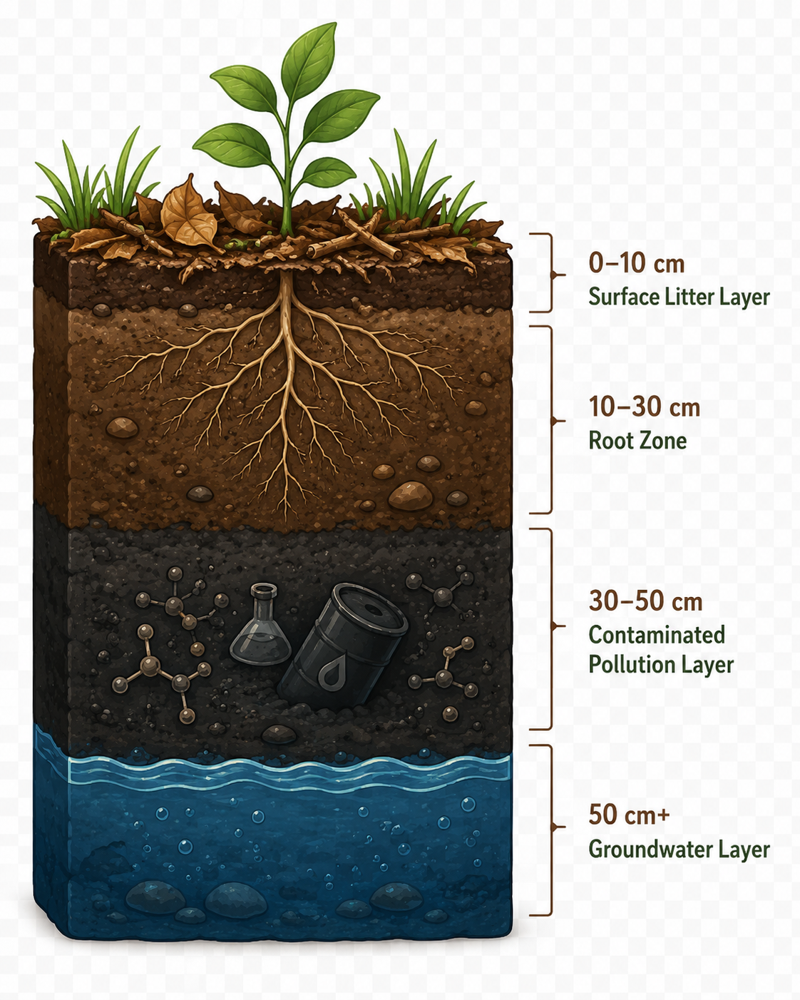

土壤污染观察：植物生命基础被破坏
工业固废、农药残留、重金属、塑料微粒——这些污染物破坏土壤结构，影响植物赖以生存的基础。
小葵体检状态
土壤剖面观察
点击不同土层，了解污染分布情况

表层（0-10cm）
落叶与灰尘
地表积累的落叶、灰尘和部分沉降的颗粒物，是污染物进入土壤的第一站。PM2.5中的重金属（Pb、Cd、Cr）随大气沉降进入表层，农药喷施后也首先残留于此。表层有机质含量最高，污染物易与有机质结合形成络合物，降低其迁移性但也增加了长期残留风险。
根系层（10-30cm）
根系发黑、分支减少
植物根系主要分布层，受污染后根系发黑、腐烂，分支减少，吸收能力大幅下降。镉（Cd）在此层浓度通常最高，因为它易被土壤黏粒和有机质吸附。当土壤pH低于5.5时，镉的活性急剧升高，更易被根系吸收。根系受损面积超过30%时，植物几乎无法正常生长。
污染层（30-50cm）
重金属、农药残留
重金属和农药残留的主要积累层。铅（Pb）在土壤中迁移极慢，主要积累在0-30cm表层，半衰期可达数百至上千年。砷（As）在还原条件下以亚砷酸盐形式存在，溶解度更高，可迁移至更深层。有机氯农药虽已禁用多年，在此层仍可检出，DDT半衰期约2-15年。
地下水层（50cm以下）
可能被污染物影响
深层土壤和地下水可能被上层渗透的污染物影响，形成长期的污染隐患。硝酸盐和六价铬（Cr⁶⁺）溶解度高，最易穿透土层污染地下水。一旦地下水被污染，修复难度极大——地下水中的污染物可能需要数十年甚至上百年才能自然稀释，且会随地下水流扩散至更大范围。
植物受害表现
发芽率下降
土壤中的有毒物质直接抑制种子萌发——新生命的起点便被扼杀。重金属离子干扰种子中α-淀粉酶的活性，阻碍淀粉向可溶性糖的转化，胚芽无法获得萌发所需的能量。镉浓度超过5 mg/kg时，小麦发芽率可下降30-50%；铅浓度100 mg/kg时，水稻发芽率降低约40%。
根系短小
根系被毒素逼退，无法向下扎根、向外扩展——浅薄而脆弱。根尖分生区是根系生长的"引擎"，重金属在此积累后抑制细胞有丝分裂，根尖伸长区细胞无法正常伸长，导致根系整体变短。侧根原基的分化也受到抑制，分支数量锐减，吸收面积大幅缩减。
生长矮化
养分断绝、毒素累积，整株矮化萎缩——与同龄健康植株相比，差距触目惊心。重金属干扰生长素（IAA）的合成与极性运输，细胞伸长受阻；同时抑制赤霉素信号通路，节间缩短。受镉污染的向日葵株高可降低25-45%，花盘直径缩小30%以上，种子产量几乎归零。
土壤污染物伤害机制详解
重金属：土壤中的隐形炸弹
伤害原理：土壤中的重金属（Cd、Pb、Hg、As、Cr等）不能被微生物降解，一旦进入土壤便长期残留。它们通过根系吸收进入植物体内，与蛋白质巯基结合导致酶失活，诱导活性氧（ROS）爆发，引发膜脂过氧化和DNA损伤。不同重金属的毒害机制各有侧重：镉（Cd）主要干扰锌的代谢和钙信号传导；铅（Pb）破坏细胞壁结构和微管骨架；汞（Hg）直接与巯基酶结合使其失活。
关键数据：中国土壤环境质量标准规定，农用地土壤镉风险筛选值为0.3-0.6 mg/kg（依pH值而定），铅为70-120 mg/kg，汞为0.5-1.0 mg/kg。全国土壤污染状况调查公报显示，耕地土壤超标率达19.4%，其中镉超标率最高，达7.0%。
农药残留：慢性毒害的积累
伤害原理：农药在土壤中的残留期远超预期。有机氯农药（如六六六、DDT）虽已于1983年起在中国禁用，但因其半衰期长达数年至数十年，至今仍可在部分土壤中检出。有机磷农药虽降解较快，但其代谢产物可能具有更强的毒性。农药残留干扰植物体内激素平衡，影响花粉管伸长和受精过程，导致结实率下降。
关键数据：草甘膦在土壤中的半衰期为2-215天（因土壤类型而异），其代谢产物AMPA半衰期更长。长期使用草甘膦可使土壤微生物量碳降低20-30%，影响土壤生态功能。中国每年农药使用量约180万吨，利用率仅约35-40%，大量残留进入土壤。
微塑料：新兴的土壤威胁
伤害原理：地膜残留、污泥农用和有机肥施用使大量微塑料进入土壤。微塑料可改变土壤物理结构，影响土壤团聚体稳定性和持水能力。更危险的是，微塑料表面吸附重金属和有机污染物，形成"复合污染载体"，被根系吸收后同时释放多种有毒物质。纳米级塑料颗粒甚至可穿透细胞壁进入细胞内部。
关键数据：中国农田土壤中微塑料丰度可达数千至数万粒/kg，设施农业土壤中因大量使用地膜，微塑料含量更高。研究表明，微塑料可使土壤持水量降低10-25%，蚯蚓存活率下降30-50%，严重破坏土壤生态系统。